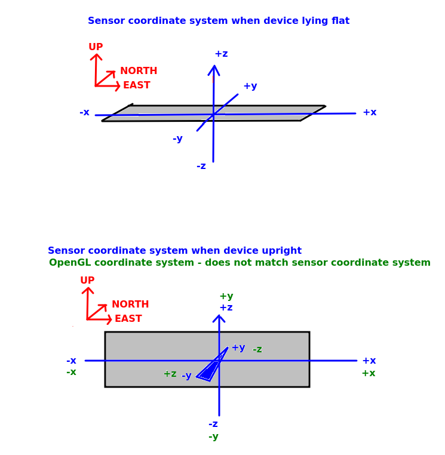

We have now covered almost everything necessary to build a location-based AR application on Android. There are just a small number of things necessary now to complete the picture.
We have dealt with OpenGL world coordinates. How do we relate these to the real world, i.e. the directions north, south, east and west? There is no "single right way" to do it; the idea is to adopt a convention and stick to it. Since, in the sensor API, an angle of 0 represents North, we are going to adopt a convention of setting North to be equivalent to negative z, because negative z represents an angle of 0 in OpenGL. In full, we will adopt this system:
z, south is positive z;x, east is positive x;y, up is positive y;Remember in the sensors topic we covered how to obtain the azimuth, pitch and roll of the device. We also covered how to obtain an orientation matrix representing the current device orientation. The good news is that this orientation matrix can (almost) be used as the view matrix in OpenGL, though note that, as said above, you will need to remap the coordinate system to translate from portrait to landscape (again, see the sensors topic), and separately correct the sensor matrix for OpenGL (see below).
So how can this be implemented?
orientationMatrix property to your GLSurfaceView.Renderer (in the OpenGLView in your case) representing the current orientation matrix from the sensors. When a new sensor reading is obtained, recreate this matrix:
glView.orientationMatrix = GLMatrix(remappedSensorMatrix)
onDrawFrame(), you need to initialise the view matrix to a clone of the orientation matrix, rather than the identity matrix:
viewMatrix = orientationMatrix.clone()
You then need to correct the sensor matrix. Why is this necessary? The diagram below shows this:

Remember that the Sensor API assumes that the device is lying flat on a horizontal surface, with the z axis intersecting the device's surface vertically, the x axis the "long" axis (in landscape) and the y axis the "short" axis (in landscape) - as shown in the top picture in the diagram. This corresponds to what we want in OpenGL.
However in an AR application we will be holding the device upright (not flat), again typically in landscape mode - as shown in the bottomp picture in the diagram. In the Sensor API, z is always "up". So in this orientation, the y axis will now be intersecting the device, and the z axis will be the short axis (because the device is being held vertically, and in the sensor API, the z axis is always vertical with respect to the world). However this coordinate system (shown in blue) does not match the OpenGL world coordinate system we are using (shown in green), in which y is vertical,z is north-south and x is east-west. So we have to correct the sensor matrix to account for this, by swapping y and z, and negating z. This is just a simple call:
viewMatrix.correctSensorMatrix()
How do we actually get world coordinates though? We cannot use latitude and longitude, because latitude and longitude are designed for a spherical surface, such as the Earth, but OpenGL assumes that the units for the x, y and z directions are equal. So we need to convert latitude and longitude into coordinates expressed in a standard distance unit, such as metres. This involves performing a mathematical transformation known as a projection, in which the Earth (a sphere, more or less) is projected onto a flat surface. The projection being used is the Spherical Mercator projection, which works reasonably well for most places (the units do not exactly equal metres, but it's good enough for a typical AR application) However it is heavily distorted towards the poles and not recommended for far northern latitudes.
Spherical Mercator therefore does not use latitude and longitude. Instead it uses eastings and northings: basically, the distance in metres (more or less) east or north of a specific origin point, respectively. This origin is usually the intersection of the equator and Prime Meridian, however in our case, to make the numbers more manageable, the origin will be at the university, instead. So the university will have an easting of 0 and northing of 0. Points east of the university will have a positive easting, and points north of the university will have a positive northing.
I have now added a library to do this conversion on the website, which you can download here. It contains these classes:
SphericalMercatorProjection - represents the projection being used. A projection allows you to convert between different coordinate systems. Here it can be used to convert between latitude/longitude and eastings/northings - see below.LonLat - a class representing a longitude and latitude, Has 'lon' and 'lat' attributes.EastNorth - a class representing a metre-based point, defined by eastings and northings. Eastings and northings are (approximately, not exactly, but good enough for our purposes here) metres east and north of a particular point, or world origin. Here, the world origin is Solent University. So if you convert the longitude and latitude of Solent into an EastNorth (easting and northing), it will give you zero for both the easting and northing. Points east of Solent have positive eastings and points north of Solent have positive northings. Has 'easting' and 'northing' attributes.
Algorithms - includes a method to calculate the distance between two latitude/longitude pairs.Main - contains some test code (currently commented out) showing you how you can use the SphericalMercatorProjection to project LonLat points into EastNorth, and unproject EastNorth points back into LonLat.You can just add these classes to your assignment project (feel free to put them in a separate package if you wish).
Note the relation between EastNorth and OpenGL x, y and z coordinates.
x world coordinates are equivalent to eastings.
y coordinates are equivalent to altitude (which we are ignoring)
z world coordinates are equivalent to the negative of northings. As discussed above, northings increase northwards, however in OpenGL north is equivalent to negative z. Thus, we have to set the z world coordinates to the negative of the northings.
You can use the JSON parsing from last year, in MAD (see here). However note that the GeoJSON API returns an object so you will need to use obj() rather than array() to obtain it via Fuel e.g.
url = "https://example.com/geojson"
url.httpGet().responseJson { request, response, result ->
when(result) {
is Result.Success -> {
val geojsonRootObj = result.get().obj()
// Parse your JSON
}
is Result.Failure -> {
tv1.text = "ERROR ${result.error.message}"
}
}
}
Try adding the Sensor API to your existing OpenGL application, and pass in the orientation matrix from the Sensor API to your Renderer. Use landscape orientation and ensure you remap the coordinate system and correct the sensor matrix, as described above.